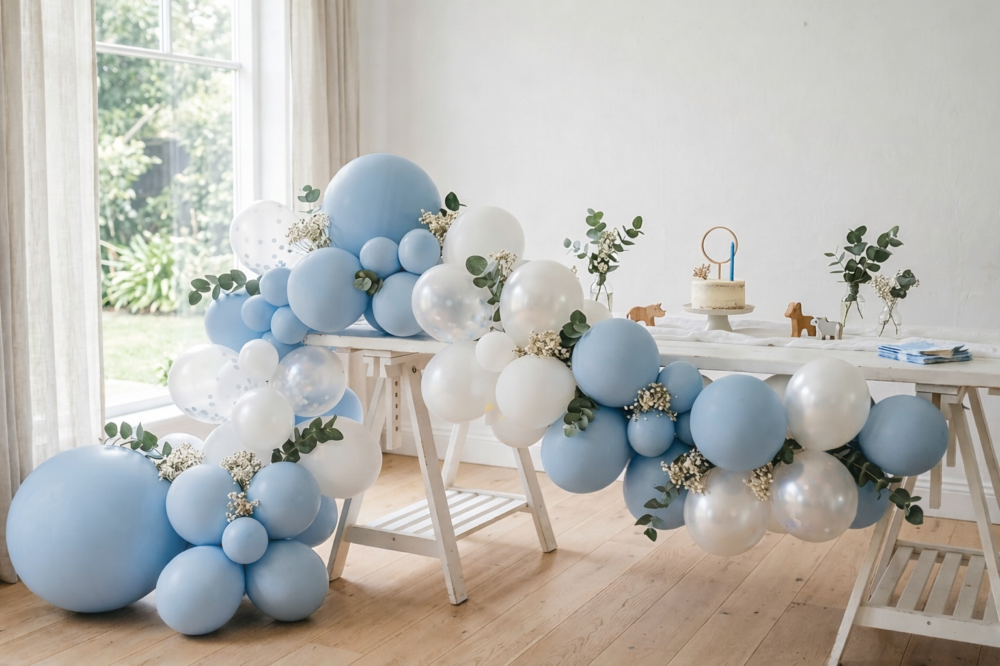
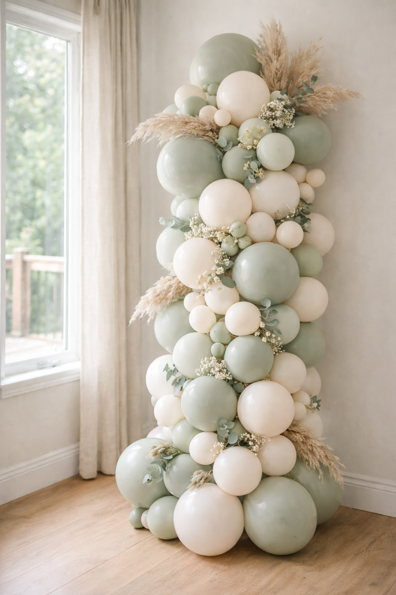
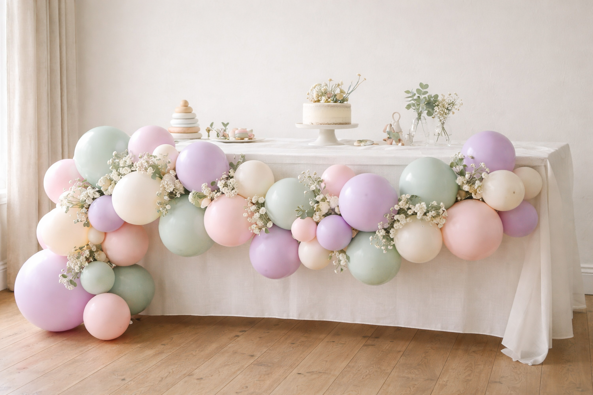

A first birthday is one of those milestones that somehow feels bigger for the parents than the child — and honestly, that’s completely fine. After twelve months of sleepless nights, first words, first steps, and learning to keep a tiny human alive, you deserve a celebration. The fact that your one-year-old will probably be more interested in the wrapping paper than the party is beside the point.
Balloon styling is one of the easiest ways to make a first birthday feel special. It photographs beautifully, it transforms any space — your living room, a village hall, a garden — and it creates that instant “wow” moment when guests walk in. Here’s everything we’ve learned from styling hundreds of first birthdays across Kent.
First Birthday Colour Palettes
The colour palette sets the tone for everything else. Get this right and the rest of the styling falls into place. These are the combinations we see working brilliantly for first birthdays right now.
1. Powder Blue & White
A timeless first birthday palette that never dates. Powder blue with white and a touch of silver chrome feels clean, classic, and properly celebratory. Works equally well for boys and girls — blue is for everyone. Add a large foil number “1” in silver and you’ve got a simple setup that looks stunning in photos.
Powder Blue · White · Silver Chrome · Ivory
2. Blush Pink & Gold
Soft, warm, and undeniably pretty. Blush pink with champagne gold accents creates a delicate, feminine palette that feels premium without being over the top. Matte blush balloons mixed with a few rose gold chromes and ivory give you that soft, dreamy look that’s all over Instagram — for good reason. It just works.
Blush Pink · Champagne Gold · Ivory · White
3. Sage Green & Cream
The palette of the moment — and one we don’t see going anywhere soon. Sage green with cream, ivory, and warm white is fresh, modern, and gender-neutral. It suits every venue and every theme. Pair with eucalyptus or olive greenery for a natural, organic feel that looks gorgeous in any season.
Sage Green · Cream · White · Soft Sage
4. Neutral Luxe
For parents who want something a bit different — no pastels, no pink or blue. Sand, caramel, warm white, and terracotta create a warm, earthy palette that feels grown-up and incredibly stylish. This is the palette that gets the most comments from our clients’ guests. It’s unexpected for a first birthday and it looks absolutely beautiful.
Sand · Caramel · Warm White · Terracotta
Colour Tip
Stick to two or three colours maximum. It’s tempting to use every colour you love, but the most impactful first birthday setups are the ones with a tight, cohesive palette. If you want variety, use different textures instead — matte, chrome, and confetti-filled balloons in the same colour family.


Powder blue & white (left) and sage green & cream (right) — two of our most requested palettes
First Birthday Themes That Work
A theme gives your celebration a thread that ties everything together — the balloons, the cake, the outfit, the decorations. Here are the themes we style most often for first birthdays, and why they work so well.
Up, Up & Away
Hot-air balloon props, cloud-shaped balloons, and soft pastels. A dreamy, whimsical theme that’s perfect for first birthdays. The hot-air balloon centrepiece doubles as a gorgeous cake table backdrop, and the sky-blue palette works for any child.
Teddy Bears’ Picnic
Warm neutrals, a picnic-style setup, and teddy bear props. Lay out a blanket, scatter some cushions, add a balloon garland in caramel and cream, and you’ve got the cosiest first birthday imaginable. Works beautifully in the garden when the weather’s kind.
Wild One (Safari)
Sage green, cream, and animal prints. “Wild One” is one of the most popular first birthday themes in the UK right now — the play on words is irresistible. Foliage garlands, wooden animal figures, and a few well-placed palm leaves make it feel adventurous without going overboard.
One Is Sweet
Pastel pinks, sprinkle patterns, and a dessert table centrepiece. This theme is all about the treats — a smash cake, cupcakes, biscuits, and a candy display. The balloon styling wraps around the dessert table, and the palette is soft and sweet without being saccharine.
My First Trip Around the Sun
Sunshine yellow, warm white, and natural textures. Another brilliant play on words that gives you a warm, cheerful colour scheme. Sun-shaped foil balloons, sunflowers, and golden accents make this one genuinely joyful. Ideal for summer birthdays.
Twinkle Twinkle Little Star
Navy, gold, and white with star-shaped foils and twinkling fairy lights. This works beautifully for winter first birthdays when the evenings are dark. A balloon garland with gold star confetti balloons scattered through it looks magical — especially with fairy lights woven in behind.
Choosing a Theme
You don’t need a theme to have a beautiful first birthday. Plenty of our clients simply choose a colour palette and let that guide everything. A theme is lovely if it resonates with you, but a well-styled celebration with a cohesive palette looks just as stunning without one.
Balloon Display Types
Different displays create different effects. Here’s what works best for first birthdays, and where to put them for maximum impact.
Organic Garlands
By far the most popular choice for first birthdays. An organic balloon garland — that loose, flowing, natural-looking arrangement in mixed sizes — is incredibly versatile. Drape it across a dessert table backdrop, along a mantelpiece, around a doorway, or as a photo wall. The “organic” part means different-sized balloons arranged asymmetrically, which looks far more natural than uniform rows.
Typical size: 2–4 metres for a feature wall · 1–2 metres for a table backdrop
Balloon Arch
A full or half balloon arch makes a brilliant entrance feature or photo backdrop. For first birthdays, we often do a half arch — it frames the cake table on one side and sweeps upward, which looks elegant without overwhelming a smaller space. Full arches work brilliantly in larger venues or garden marquees.
Best for: Venue entrances · Photo opportunities · Cake table framing
Giant Number “1”
A large foil or mosaic number “1” is the centrepiece of most first birthday setups. Foil numbers come in gold, silver, rose gold, and various colours — they’re about 34 inches tall and make a simple but effective statement. For something more dramatic, a mosaic number frame (about 4 feet tall) filled with balloons in your chosen palette is a real showstopper that guests won’t stop photographing.
Best for: Photo backdrops · Centrepieces · Statement styling
Floating Ceiling Clusters
Helium-filled balloons with trailing ribbons floating at different heights above the party space create atmosphere and movement. They’re simple, they fill vertical space beautifully, and children are mesmerised by them. Attach a small weight to each ribbon — a chocolate coin or a tiny teddy — and they double as party favours at the end.
Best for: Creating atmosphere · Filling large spaces · Helium-friendly venues

An organic garland in soft pastels framing the cake table — the setup our clients request most
Planning Your First Birthday
First birthdays come with their own set of practical considerations. The guest of honour is one year old, after all — they have opinions about nap time and very strong feelings about cake. Here’s what to think about.
Timing
Late morning to early afternoon works best. Most one-year-olds are at their happiest after a morning nap and before the afternoon slump hits. A 10:30am to 1pm window is ideal — it covers a late-morning snack, the cake smash, and present opening before anyone melts down (child or parent).
Venue
You have three main options:
- At home — The most popular choice. Your child is comfortable, you can style it exactly how you want, and there’s no hire fee. Living rooms, kitchens, and gardens all work brilliantly. The main limitation is space for guests.
- A village or church hall — Perfect if you’re inviting more than about 15–20 people. Hall hire across Kent typically runs £50–£150 for a half day, and you get a blank canvas to style however you like. Most have kitchen facilities too.
- A soft play or children’s venue — Takes the pressure off entertaining older siblings and toddler guests. Some venues offer party packages that include food and a dedicated party room. The trade-off is less control over styling.
Guest List
First birthdays often end up bigger than planned. What starts as “just close family” quickly becomes 40 people when you add grandparents, aunts and uncles, NCT friends, and the neighbours whose baby was born the same week. That’s fine — just be realistic about your space from the start.
Practical Tip
Set up a quiet space away from the party area where your one-year-old can retreat for a nap or a calm-down moment. A bedroom or a quiet corner with a blanket works perfectly. Even the most sociable baby will need a break at some point.
The Cake Smash Setup
The cake smash has become a first birthday essential — and the balloon backdrop behind it is usually the most photographed part of the whole celebration. Here’s how to get it right.
The Backdrop
A balloon garland or half arch in your party colours, positioned behind a small low table or the floor, creates the perfect framing. Keep the garland at the child’s level — about 1–2 metres wide, sweeping from floor level upward — so the balloons are in shot when photos are taken at the child’s eye height.
The Cake
A small, simple sponge cake works best for smashing. Buttercream icing (not fondant — too firm for little hands) in a colour that coordinates with your palette. Some parents have a separate “display” cake for guests and a smaller smash cake for the birthday child. This is genuinely a good idea — you get the pretty photos and the guests get a slice that hasn’t been through a one-year-old’s fingers.
The Floor
Put down a splash mat, a clean sheet, or a washable rug underneath. Icing goes everywhere — hands, face, hair, elbows, occasionally the walls. A wipeable surface underneath saves your carpet and makes for better photos (a plain background is cleaner than a busy carpet pattern).
Photo Tip
Natural daylight is everything. If you’re doing the cake smash at home, set up near the biggest window in the room. Side lighting (window to one side) creates softer, more flattering photos than front-on flash. Your phone camera will do a beautiful job if the light is right.
DIY vs Professional Styling
There’s no right answer here — it depends entirely on your budget, your time, and how elaborate you want the setup to look. Both routes can produce beautiful results.
| DIY | Professional | |
|---|---|---|
| Cost | £20–£60 for supplies | From £120 for a feature piece |
| Time | 2–4 hours to inflate and arrange | We arrive, set up, and leave |
| Finish | Charming and personal | Polished and structured |
| Best for | Intimate family celebrations | Larger parties, statement displays |
| Cleanup | All yours | We collect afterwards |
If you’re going the DIY route, balloon garland kits from Ginger Ray or Hobbycraft are the easiest starting point. They come with a strip of tape, a mix of balloon sizes, and usually a few confetti balloons. The key to making a DIY garland look professional is varying the balloon sizes — mix 5-inch, 10-inch, and 12-inch balloons throughout, and cluster them in groups of two or three rather than stringing them in a line.
Where professional styling really earns its keep is on larger displays — a full arch, a backdrop wall, or a garland longer than about 2 metres. The structural integrity needs to be right (nobody wants a balloon garland collapsing mid-party), and getting consistent balloon sizes and clean colour distribution takes practice and a decent pump.
Hybrid Approach
Many of our first birthday clients book us for the main feature — typically a garland behind the cake table — and handle the rest themselves with helium balloons, bunting, and table decorations. You get the wow factor where it counts, and the personal touch everywhere else.
First Birthday Styling Checklist
Everything You Need for a Beautiful First Birthday
From balloons to cake — the essentials and the nice-to-haves
- Balloon garland or feature display
- Number “1” foil or mosaic
- Cake (display + smash cake)
- Splash mat for cake smash area
- Highchair or low table for cake smash
- Birthday outfit (plus a spare)
- Party bags or small favours
- Bunting or banner in your colour scheme
- Photo area with good natural light
- A “quiet zone” for nap time
- Food for guests (finger food works best)
- First birthday card or guest book
How Much Does First Birthday Styling Cost?
We believe in being upfront about pricing. Here’s a realistic guide to what first birthday balloon styling costs across Kent, so you can plan your budget.
- DIY balloon kit: £15–£30 for a basic garland kit, £40–£60 for a premium set with foils and accessories
- Helium balloon bunches (professional): from £30–£50 for a cluster of 5–7 balloons with ribbons and weights
- Small organic garland (1–2m): £80–£150 depending on size and complexity
- Feature garland or half arch (2–3m): £150–£250
- Full arch: £250–£400+
- Mosaic number frame (filled): £100–£180
- Full party styling package: from £300 — typically includes a garland, number feature, and table balloons
Delivery and installation is usually included within Sittingbourne, and we charge a small travel fee for locations further across Kent. We always collect and remove the display after the party too — one less thing to think about at the end of a big day.
Book Your First Birthday Styling
If you’re planning a first birthday celebration in Kent, we’d love to be part of it. We style first birthdays every week across Sittingbourne, Maidstone, Canterbury, Faversham, Medway, and beyond — from simple garland setups to full party styling packages.
Have a look at our baby shower balloon ideas if you’re also planning ahead for future celebrations, or browse our gallery to see recent first birthday setups we’ve styled. For colour inspiration, our colour palette guide covers the combinations that are trending right now.
Let’s Style Their First Birthday
Tell us about your celebration and we’ll design the perfect balloon display — from a simple garland to a full party styling package.